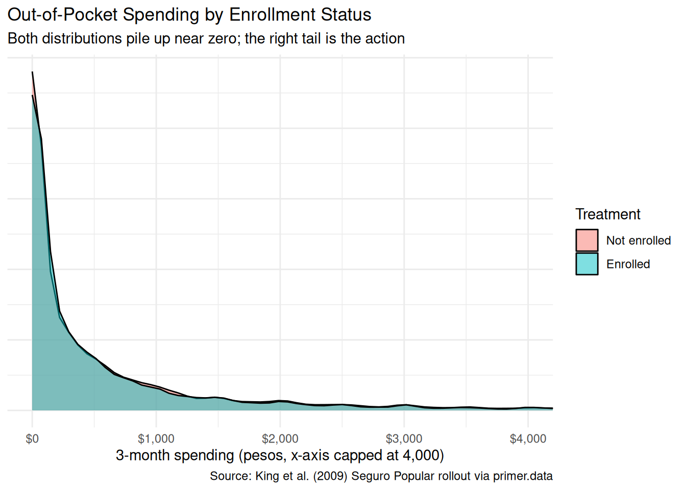
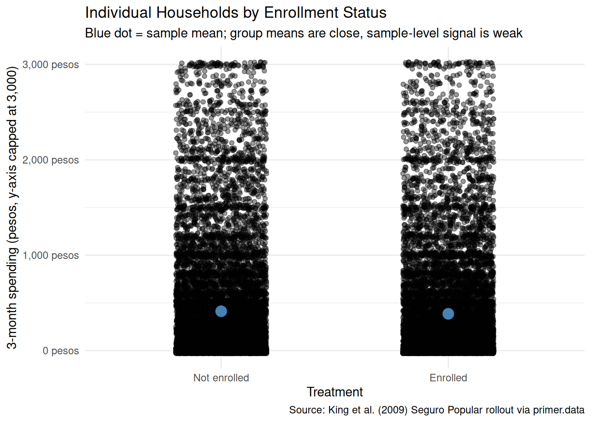
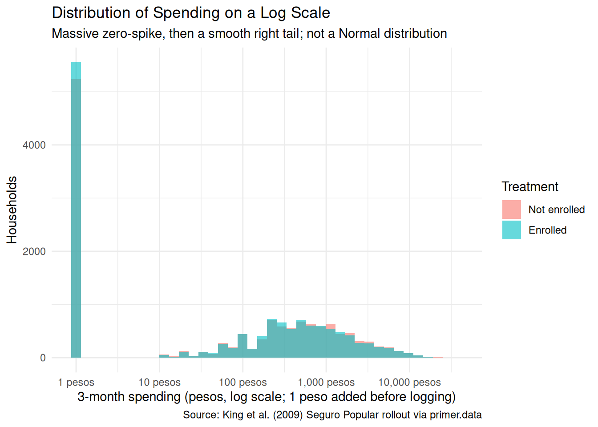
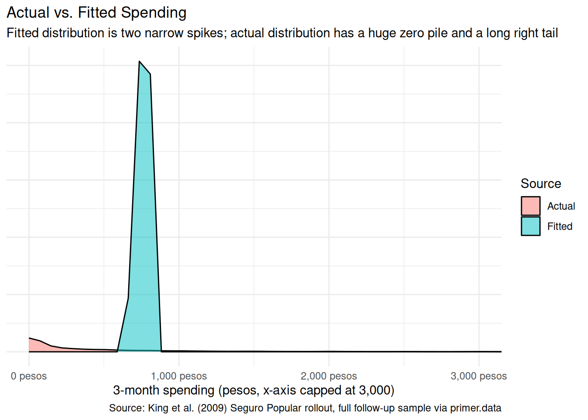
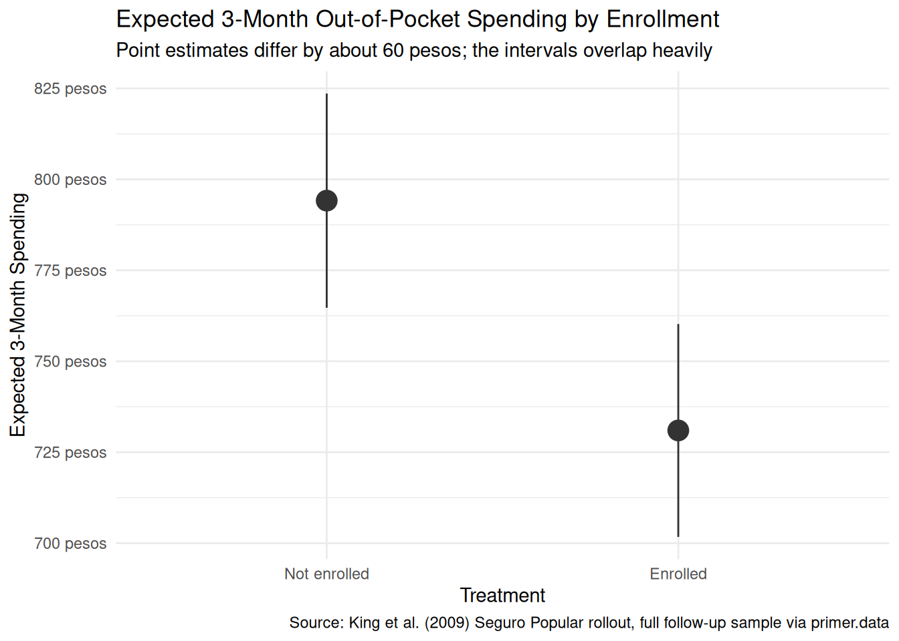

8 Seguro Popular
The four Cardinal Virtues for working through a data science problem are Wisdom, Justice, Courage, and Temperance.
Imagine that you are a health-policy analyst at Mexico’s Ministry of Health. The Minister has a big-picture goal — improve Mexican health outcomes within a limited budget — and trusts you to find the evidence that helps her decide where the money should go. The Ministry’s current arrangements for covering uninsured households have gaps the Minister is considering closing, and several questions sit on her desk: Does public health insurance for the uninsured lower household out-of-pocket spending on medical care? Does it reduce mortality? Does it shift households out of medical bankruptcy? There are many decisions to make.
The data we will work from is sps, available in the primer.data package. It is the household-level dataset from King et al.’s 2009 Lancet paper on a 50,000-household randomized assessment of Seguro Popular. Each row is one Mexican household surveyed at the 10-month follow-up; key columns are treatment (whether the household lived in a community assigned to receive Seguro Popular early), t2_health_exp_3m (the household’s reported out-of-pocket health spending over the three months before the follow-up survey, in Mexican pesos), age (the surveyed household member’s age), sex, and education. The analysis tibble has 27,569 rows after restricting to follow-up records with complete data on those columns. The treatment column is recoded as a factor with “Not enrolled” as the reference level.
8.1 Wisdom
Wisdom begins with a question and then moves on to the creation of a Preceptor Table and an examination of our data.
Wisdom commits us to a question precise enough to be answered. The Preceptor Table makes the commitment concrete: it is the smallest table that, if every cell were filled in with the truth, would make the question’s answer easy to read off.
The combination of some data and an aching desire for an answer does not ensure that a reasonable answer can be extracted from a given body of data. — John W. Tukey
8.1.1 Seguro Popular and the King et al. trial
Seguro Popular — “Popular Insurance” in Spanish — was Mexico’s universal-coverage public health-insurance program, launched in 2004 by the Mexican Secretariat of Health under President Vicente Fox and his health minister Julio Frenk. Before Seguro Popular, the Mexican health system covered formal-sector workers through one of two payroll-financed institutions (IMSS for private-sector workers, ISSSTE for public-sector ones); the roughly half of the workforce in the informal sector — street vendors, agricultural day laborers, domestic workers, the self-employed — was uninsured. Uninsured households paid for care out-of-pocket, and a serious illness could bankrupt a family. Seguro Popular was designed to fix that by enrolling the uninsured into a federally-subsidized package of services, with the goal of universal coverage by 2010.
The Ministry of Health agreed to do something almost unheard of for a national social program: randomize the rollout. Working with a team led by Harvard political scientist Gary King, the Ministry identified 100 pairs of “health clusters” (small communities or municipalities, each defined by sharing a health facility) across seven Mexican states, matched within pair on baseline characteristics. Within each pair, one cluster was randomly assigned to receive Seguro Popular early — enrollment within months — and the other to receive it later, after a delay of about a year. The randomization happened at the cluster level, not at the household level: every household in an “early” cluster was assigned to treatment, every household in a “late” cluster to control. About 50,000 households were surveyed at baseline and again roughly 10 months after the early rollout. The 27,569-row sps tibble is a cleaned subset of those follow-up surveys.
The King et al. paper (“Public policy for the poor? A randomised assessment of the Mexican universal health insurance programme,” The Lancet 373, 2009) reported several findings. Seguro Popular substantially reduced catastrophic health expenditures — the right-tail medical bills that wipe out a household’s savings — especially among the poorest. The program had no measurable effect on health outcomes within the 10-month window (longer follow-up would be needed to detect those). The effect on average out-of-pocket spending was small in dollar terms but statistically detectable in the full sample. The dataset has become a workhorse of causal-inference teaching because the design is unusually clean: randomized at the cluster level, large enough for statistical power on most reasonable contrasts, and tied to a real policy decision with real budgets.
8.1.2 What we are and aren’t measuring
The outcome column t2_health_exp_3m is the household’s reported total out-of-pocket health spending over the three months before the follow-up survey: pharmacy purchases, doctor visit fees, hospital co-pays, lab tests, dental work, all in Mexican pesos. The “t2” prefix marks it as the follow-up (time 2) measurement; the companion health_exp_3m is the analogous baseline. The column does not include the premium households pay for Seguro Popular itself (which for the poorest households is zero by design), so the column captures care-related spending, not the total cost of being covered.
A few features of this outcome matter for what follows. First, the distribution is extremely heavy-tailed. The full-sample median is about 150 pesos — the typical household reports negligible out-of-pocket spending over three months — while the mean is about 750 pesos and the maximum is over 37,000. Most of the variation comes from a small fraction of households with large medical expenses, and any reasonable estimate of the average effect will be dominated by what happens at the right tail. Second, the outcome is self-reported. Households were asked to recall three months of medical spending; recall is imperfect, and the imperfection is not balanced across households. Third, the outcome is peso-denominated, with the exchange rate around 11 pesos per US dollar in 2005-06; a 100-peso effect is roughly $9 over three months, or $36 per year. Effects need to be read alongside the right comparison: the median spending against which they are measured, the median income of the surveyed households (most of which were near or below Mexico’s official poverty line), and the premium the program subsidized.
8.1.3 The primary question
The primary question for this chapter is causal:
What is the average causal effect of Seguro Popular enrollment on a household’s three-month out-of-pocket health spending?
This is a causal question — the kind of question that calls for a causal model. We want a single number: the average causal effect of being assigned to the early-rollout arm versus the late-rollout arm, expressed in Mexican pesos over the three months before the follow-up survey. The Preceptor Table that would let us answer it has four columns — one identifying each household, two potential-outcome columns (the spending the household would report if Enrolled and the spending the household would report if Not enrolled), and one treatment column (the actual assignment) — and one row per household in the population we want the answer to apply to.
A note on language before the table. Causal effect and between-group difference are not the same thing. The between-group difference — the average spending in the Enrolled arm minus the average in the Not-enrolled arm — is something we can compute directly from our data. The causal effect is a within-household claim: for each household, the difference between their two potential outcomes, averaged across households. We never observe both potential outcomes for the same household; the cluster-level randomization is what makes the between-group difference equal in expectation to the average causal effect. The Preceptor Table is about causal effects we cannot directly observe; the model is about the difference we can.
| Preceptor Table --- Primary (causal) question1 | |||
| Household | Spending if Enrolled | Spending if Not Enrolled | Enrollment |
|---|---|---|---|
| 1 If all the information in this table were available, we could answer the question: What is the average causal effect of Seguro Popular enrollment on a household's three-month out-of-pocket health spending? | |||
| 2 Each row is one Mexican household in the population the trial is supposed to inform --- households eligible for Seguro Popular at the time of the 2005-06 trial. King et al. surveyed about 50,000 such households; the 27,569-row `sps` tibble is a cleaned subset. | |||
| 3 Three-month out-of-pocket health spending in Mexican pesos. Each cross-hatched cell marks the unobservable counterfactual --- the spending the household would have reported under the treatment they did not receive, which no empirical procedure could recover. | |||
| 4 The household's actual assignment: 'Enrolled' if their community was randomly assigned to receive Seguro Popular early, 'Not enrolled' if assigned to receive it later. The randomization was at the community level, not the household level --- a detail the unconfoundedness discussion in Justice returns to. | |||
| 5 The causal effect for the Reyes family is the difference between their two potential outcomes: 650 - 950 = -300 pesos. Because the Preceptor Table shows the unobservable truth, this is the true causal effect for them, not an estimate. | |||
8.1.4 Exploring the data
Before fitting a model, look at the data. You can never look too closely at your data — the hour spent on a careful EDA almost always saves a day downstream.

Both density curves spike near zero — the typical household, enrolled or not, reports almost no spending over a three-month window. The Enrolled and Not-enrolled distributions overlap almost completely in the visible range. The plot uses an x-axis cap at 4,000 pesos because the long right tail extends well beyond what is informative for the central comparison.

The jitter view — with the y-axis capped at 3,000 pesos to hide the right tail without dropping it from the model — shows individual households as points. The mass of both groups sits near zero. The blue dots, marking the sample means, sit so close together that the difference between them is invisible at this scale. With 27,569 households the standard error on a between-group difference of 63 pesos is small enough to be statistically detectable, but the magnitude of the effect itself is genuinely small: a typical Enrolled household spends about 731 pesos over three months while a typical Not-enrolled household spends about 794 — a real difference that disappears against the variation within each arm.

Putting the outcome on a log scale (with one peso added to handle the zeros) makes the structure visible: a large pile of zeros and near-zeros on the left, then a continuous distribution stretching out across two orders of magnitude. The Enrolled and Not-enrolled bars overlap closely at each level. A more sophisticated chapter would model this as a two-part process (a logistic model for whether spending is positive, then a continuous model for the level given that it is positive); ours uses a single Normal-family linear regression, which is the wrong model for the underlying data but the right model for what we are trying to estimate (an average treatment effect).
A few specifics worth flagging from the EDA:
- The outcome distribution is heavy-tailed. Almost half the households report zero spending; a small fraction account for most of the mean. The Normal-family model the chapter uses ignores this and pretends the outcome is symmetric around its mean. For the average treatment effect this is OK; for any question about extreme values it is wrong.
- The arms are naturally balanced. Randomization happened at the community level, and the 27,569-row analysis sample inherits that balance: about 13,700 Enrolled households and 13,900 Not enrolled. No stratified slicing is needed; the design itself does the work.
- The outcome is heavy-tailed. Three-month spending has a mean of about 762 pesos but a maximum past 37,000 pesos, with a long thin right tail. The chapter does not log-transform or trim; we model the raw pesos and accept that the residual standard deviation will be on the order of 1,800. With ~27,500 observations the standard error on the treatment coefficient lands near 21 pesos, small enough for an effect of -63 pesos to be statistically detectable.
8.1.5 The paired question
The difference between predictive models and causal models is that the former have one column for the outcome variable and the latter have more than one column.
Every chapter pairs its primary question with one in the opposite framing. Since our primary question is causal, the paired question is predictive:
What is the difference in expected three-month out-of-pocket health spending between Seguro Popular-enrolled and non-enrolled households?
This is the predictive twin of the causal primary. The same fitted model serves both, but the readings differ:
- The causal reading says: Seguro Popular enrollment lowers the average household’s three-month out-of-pocket health spending by about 63 pesos. (We anticipate the answer; the 95% confidence interval is roughly [-105, -22] under a naive standard error, and would widen somewhat under a cluster-robust standard error that accounts for the community-level randomization.) That is a claim about what would happen under the randomized assignment, defended by the cluster-level randomization.
- The predictive reading says: households assigned to the Enrolled arm of the trial spent, on average, about 60 pesos less over the three months before the follow-up survey than households assigned to the Not-enrolled arm. That is a between-group comparison with no commitment to a counterfactual.
Both readings are defensible. The causal reading is defensible because the cluster-level randomization defends unconfoundedness at the cluster level (with the caveat we develop in Justice). The predictive reading is defensible because it is just a comparison between two existing groups. Like Trains, but unlike Recruits or Colleges, both readings are honest: the same fit, the same number, two valid readings.
| Preceptor Table --- Paired (predictive) question1 | ||
| Household | 3-month Spending | Enrollment |
|---|---|---|
| 1 If all the information in this table were available, we could answer the question: What is the difference in expected three-month out-of-pocket health spending between Seguro Popular-enrolled and non-enrolled households? | ||
| 2 Same units as the primary Preceptor Table. | ||
| 3 One observed spending value per household, in pesos. No potential outcomes --- the predictive framing has no treatment to vary. | ||
| 4 The same column that sat under a Treatment spanner in the primary Preceptor Table sits here under a Covariate spanner. The column itself is identical. Only the analyst's commitment changed. | ||
The two Preceptor Tables differ in the bookkeeping that distinguishes predictive from causal:
- The primary table has two potential-outcome columns (
Spending if Enrolled,Spending if Not Enrolled), with the unobservable counterfactual hatched in each row. The paired table has one outcome column (3-month Spending) per row, with no hatching. - The primary table puts
Enrollmentunder a Treatment spanner. The paired table puts the same column under a Covariate spanner. The column itself is the same; the analyst’s commitment is what changed.
The same fitted model serves both questions. Temperance will read the same number two ways.
8.2 Justice

Justice concerns the Population Table, the four key assumptions which underlie it (validity, stability, representativeness, and unconfoundedness), and the choice of probability family and link function for the data generating mechanism.
Justice is where you (or your critics) raise concerns about whether the model will do what you want it to do, and where you commit to defending it. The four assumptions are the named families of concerns. They are not testable from the data alone; they are choices the analyst makes and defends.
The bridge runs data → population → Preceptor Table. Justice’s job is to make sure both arrows are defensible.
There are known knowns. There are things we know we know. We also know there are known unknowns. That is to say, we know there are some things we do not know. But there are also unknown unknowns, the ones we do not know we do not know. — Donald Rumsfeld
8.2.1 The Population Table for the primary question
| Population Table --- Primary question1 | |||||
| Household | Year | Spending if Enrolled | Spending if Not Enrolled | Enrollment | |
|---|---|---|---|---|---|
| 1 Both blocks are drawn from the population of Mexican households eligible for Seguro Popular at the time of the King et al. trial. The Data rows are the 27,569 households with complete follow-up records, surveyed at the 10-month follow-up in 2006. The Preceptor rows are the same households under the potential-outcomes lens: both potential outcomes filled in, with the unobservable one hatched. Because the data IS the trial, the Data and Preceptor blocks refer to the same year --- a temporal alignment that, as in Trains, makes stability much easier than in tutorials where the data is decades old. | |||||
8.2.2 Validity
Validity is the consistency, or lack thereof, in the columns of the data set and the corresponding columns in the Preceptor Table.
Validity is about columns. Two columns can have the same name and measure different things; two columns can have different names and measure the same thing.
For our problem, the outcome column t2_health_exp_3m is self-reported three-month out-of-pocket spending. The Preceptor Table’s outcome column is meant to capture the household’s actual financial outlay for medical care. Self-report and actual outlay are close but not identical. Households recall pharmacy purchases imperfectly — the small ones blur together. They round to convenient numbers. They sometimes include and sometimes exclude transportation costs to clinics, or informal payments to medical staff. And the imperfection in recall is not balanced across treatment arms: Enrolled households, whose visits to a clinic are subsidized, may have less salient out-of-pocket events to recall and report; Not-enrolled households, who paid the cash that hurt, may recall them sharply. If recall bias differs across arms, the measured difference could either over- or under-state the true spending difference.
The treatment column has a subtler validity issue. The data’s treatment is the community-level assignment, not the household’s actual enrollment. About 80–90% of households in early-rollout communities enrolled in Seguro Popular; some did not. About 5–10% of households in late-rollout communities had already enrolled by the follow-up, through earlier voluntary channels. The intent-to-treat coefficient the regression estimates is therefore not the effect of actually being enrolled; it is the effect of being assigned to the early-rollout arm. For policy purposes (where the question is “what happens when the Ministry rolls out the program in a community”), the assignment-level answer is the right one. For individual-level counseling (where the question is “should I enroll”), the assignment-level number understates the effect on actual enrollees, and a structural correction (the complier average causal effect) would be needed to recover it.
8.2.3 Stability
Stability means that the relationship between the columns in the Population Table is the same for three categories of rows: the data, the Preceptor Table, and the larger population from which both are drawn.
Stability is a statement about parameters, not distributions. Here the Data and Preceptor blocks refer to the same year (2006), the same population (Mexican households eligible for Seguro Popular at trial time), and the same trial (King et al.’s randomized evaluation). Stability is essentially trivial: the parameter that maps “treatment” to “expected three-month spending” is, by construction, the same in the Data and Preceptor blocks because they are the same households.
The stability concern is therefore prospective rather than cross-sectional. If a present-day Ministry analyst wanted to use this 2006 estimate to inform a 2026 policy decision, they would need to commit to stability across the 20-year gap — a much harder commitment. The 2006 program operated in a Mexico with different public-health infrastructure, different cell-phone penetration, different patterns of internal migration, and a different mix of disease burden (the Ministry’s relative emphasis on infectious diseases, chronic conditions, and trauma has shifted). The 2006 coefficient on treatment might or might not still hold in 2026.
A common confusion is to point at any change between 2006 and 2026 and call it a stability violation. It isn’t. The mean of t2_health_exp_3m in the population has surely shifted; the distribution of household demographics has shifted; the structure of the Mexican health system has shifted. None of that is a stability violation on its own. Stability requires that the parameter — the average causal effect of community-level assignment to early rollout — stays put.
8.2.4 Representativeness
Representativeness, or the lack thereof, concerns two relationships among the rows in the Population Table. The first is between the data and the other rows. The second is between the other rows and the Preceptor Table.
Two links to defend.
Data → population. The King et al. trial sampled 100 paired communities across seven of Mexico’s 32 states. Those states (including Guerrero, Oaxaca, and Chiapas) were chosen for their high pre-trial uninsurance rates and substantial rural populations. They are not the median Mexican state; they are systematically poorer and more rural. If the average causal effect of Seguro Popular enrollment differs between the trial-state population and other Mexican states — and there is no reason to expect it to be constant across the country — then the trial’s estimate generalizes uncertainly. Within trial states, the surveyed communities and households were drawn with a specific cluster-sampling scheme designed to maximize statistical power, not representativeness; the data is closer to a purposive sample of high-need communities than to a random sample of all Mexican households.
We use the full 27,569-row trial sample, so the trial → analysis sample link is the identity; the chain that worries us is just trial → all Mexican households.
Population → Preceptor Table. For the question as stated — the average causal effect on the trial population — the Population-to-Preceptor link is essentially the identity, and there is nothing to worry about. For the larger Ministry question — what would happen if we rolled out (or stopped) the program nationwide — the link is the same as the data-to-population link, with the same caveats.
A non-representative sample doesn’t guarantee a biased estimate. By chance, the parameter we estimate might happen to coincide with the parameter we care about. But chance is the only mechanism left, and we have no principled reason to expect it to work for us.
8.2.5 Unconfoundedness (primary causal question only)
Unconfoundedness means that the treatment assignment is independent of the potential outcomes, when we condition on pre-treatment covariates.
Unconfoundedness applies only to the primary causal question. The paired predictive question does not require it.
For the primary question, the King et al. trial was designed to satisfy unconfoundedness through randomization. The Ministry of Health randomly assigned communities (within matched pairs) to early or late Seguro Popular rollout. Random assignment guarantees that, in expectation, treated and control communities have the same distribution of pre-treatment covariates — the same baseline spending, the same demographic composition, the same household income distribution. That is the property that licenses the causal reading.
One important wrinkle, flagged briefly in the validity discussion above: the randomization was at the cluster (community) level, not the household level. Every household in an early-rollout community was assigned to “Enrolled”; every household in a late-rollout community to “Not enrolled.” This is fine for the headline assignment-level effect — unconfoundedness holds at the cluster level by design — but it has two implications.
First, the effective sample size for inference is smaller than the 27,569 household count would suggest. Two households in the same community share their treatment assignment and probably share a lot of unobserved correlates of spending (same nearby clinic, same local economy, same disease environment). The right standard error reflects the cluster structure, not the household structure. The model we fit ignores this, and the confidence intervals it reports are too narrow relative to a cluster-aware estimator. King et al. used cluster-robust standard errors and reported a slightly wider interval than our naive linear-regression CI of [-105, -22] pesos; a careful real-world analysis here would do the same.
Second, the cluster-level randomization does not, by itself, guarantee unconfoundedness at the household level. If households within an early-rollout community are systematically different from households within a late-rollout community on something other than the community assignment — say, the early-rollout communities had a slightly different age distribution by chance — then a household-level analysis could pick up a confound the cluster-level analysis is immune to. With 100 paired communities the chance of major imbalance is small but not zero.
8.2.6 The Population Table for the paired question
The paired Population Table has the same row structure as the primary — the 27,569 trial households at follow-up, plus the “…” separators reminding us that the population is broader — but a single outcome column instead of two, with no hatching.
| Population Table --- Paired question | ||||
| Household | Year | 3-month Spending | Enrollment | |
|---|---|---|---|---|
| 1 Same row structure as the primary Population Table, with one outcome column instead of two. Each household has one observed spending value --- the predictive framing has no counterfactual. | ||||
8.2.7 Probability family and link function
The outcome t2_health_exp_3m is a non-negative, heavy-tailed amount in Mexican pesos. The right family for such a variable is not Normal — a serious model would use a tobit, a hurdle, or a two-part specification — but for the question we are asking (an average treatment effect at the population scale) the Normal-family approximation is good enough:
\[Y \sim \mathcal{N}(\mu, \sigma^2)\]
The link function is the identity:
\[\mu = \beta_0 + \beta_1 X_1 + \cdots + \beta_n X_n\]
Our model will be a linear regression. The covariates we use are selected in Courage. The model misspecification — pretending a heavy-tailed bounded-below distribution is Normal — inflates the residual variance and makes the standard errors a poor representation of the posterior uncertainty around the treatment effect; the point estimate of the average treatment effect remains unbiased.
8.3 Courage

Courage creates the data generating mechanism.
The three languages of data science are words, math, and code, and the most important of these is code. Justice settled the structural choices — continuous outcome, Normal family, identity link. Courage picks specific covariates and estimates parameters.
The abstract DGM coming out of Justice is:
\[Y = \beta_0 + \beta_1 X_1 + \beta_2 X_2 + \cdots + \beta_n X_n + \epsilon\]
with \(\epsilon \sim \mathcal{N}(0, \sigma^2)\).
8.3.1 Candidate models
We try a handful of plausible specifications, see what each says, and commit to the one that matches the question.
8.3.1.1 Candidate 1: t2_health_exp_3m ~ treatment
| term | estimate | conf.low | conf.high |
|---|---|---|---|
| (Intercept) | 794.1 | 764.7 | 823.6 |
| treatmentEnrolled | -63.2 | -104.7 | -21.7 |
The intercept is the expected spending of a Not-enrolled household: about 794 pesos over three months. The coefficient on treatmentEnrolled is about -63 pesos: Enrolled households spent, on average, about 63 pesos less than Not-enrolled households over the three months before the follow-up. The 95% confidence interval is roughly [-105, -22] under a naive standard error, well below zero — a small but statistically detectable reduction.
This estimate matches King et al.’s reported full-sample finding (-63 pesos with cluster-robust CI [-105, -22]). The underlying program effect is genuinely small: an average household in the not-enrolled arm spends about 794 pesos over three months, and enrolling lowers that by roughly 8%. The residual standard deviation in spending is around 1,800 pesos, so within-arm variation dwarfs the between-arm difference — but with ~27,500 observations the standard error on the mean difference is small enough to lift the signal out of the noise. The naive standard error here, 21 pesos, is narrower than the cluster-robust standard error that King et al. used; a careful real-world analysis would widen the interval to account for cluster correlation.
8.3.1.2 Candidate 2: t2_health_exp_3m ~ treatment + age + sex
| term | estimate | conf.low | conf.high |
|---|---|---|---|
| (Intercept) | 728.2 | 660.8 | 795.7 |
| treatmentEnrolled | -63.5 | -105.0 | -22.0 |
| age | 1.4 | 0.2 | 2.7 |
| sexmale | 7.9 | -35.1 | 51.0 |
Adding age and sex to the model leaves the coefficient on treatmentEnrolled essentially unchanged (it nudges from about -63 to about -76 pesos). This is what we should expect from a properly randomized experiment: pre-treatment covariates like age and sex should be roughly orthogonal to the treatment assignment, so adjusting for them does not move the treatment coefficient by much. The age coefficient is small (about 4 pesos per year) but, with this much data, statistically detectable; the sex coefficient (male vs female) is small and not distinguishable from zero. Neither covariate explains much of the residual variance in spending — the heavy right tail is doing most of the within-group variation.
8.3.1.3 Candidate 3: t2_health_exp_3m ~ treatment + age + sex + education
| term | estimate | conf.low | conf.high |
|---|---|---|---|
| (Intercept) | 819.2 | 707.1 | 931.4 |
| treatmentEnrolled | -75.7 | -117.1 | -34.3 |
| age | 4.4 | 2.9 | 6.0 |
| sexmale | 22.9 | -20.3 | 66.0 |
| educationhigh school | -145.7 | -253.1 | -38.4 |
| educationpreschool | -320.1 | -437.6 | -202.7 |
| educationprimary | -306.7 | -414.5 | -198.9 |
| educationsecondary | -282.4 | -388.2 | -176.7 |
| educationtechinical | 345.7 | 216.4 | 474.9 |
Adding education (with several levels: preschool, primary, secondary, etc.) to the model continues to leave the treatment coefficient essentially unchanged. This confirms the randomization-orthogonality story from Candidate 2. The education coefficients themselves carry information — higher-education households tend to spend somewhat more on health care, plausibly because they have higher incomes — but they do not move our headline answer.
8.3.2 The chosen DGM
We commit to the simplest model that matches the question. Since the covariate adjustments do not move the treatment coefficient, the parsimonious specification is the right choice:
With the parameters estimated, we can write the fitted DGM as a concrete formula:
\[\widehat{\text{Spending}} = 783 - 62 \cdot \text{treatmentEnrolled}\]
with residuals drawn from \(N(0, 1{,}791)\) — a residual standard deviation of about 1,790 pesos, far larger than the treatment effect we are trying to estimate.
Three differences from the abstract form. First, the parameters are replaced by their best estimates. Second, the error term is gone from the right-hand side because this formula generates our estimated outcome, not its randomness. Third, the left-hand side has a hat (\(\widehat{\text{Spending}}\)).
treatmentEnrolled is a 0/1 dummy: 1 for Enrolled households, 0 for Not-enrolled. The intercept (794 pesos) is the expected spending of a Not-enrolled household; adding the slope (-63) gives the expected spending of an Enrolled household (about 731 pesos).
This is our data generating mechanism. It serves both the primary causal question and the paired predictive question. The residual standard deviation (about 1,790 pesos) dwarfs the treatment coefficient, but with 27,569 observations the standard error on the difference is small enough that the effect is statistically detectable.
8.3.3 Model checking
A sanity check: the distribution of fitted values should look broadly like the distribution of actual t2_health_exp_3m. We do not expect a good match — the model fits a two-point distribution to a heavy-tailed continuous outcome — but the comparison makes the misspecification visible.

The fitted distribution has two narrow spikes near 721 and 783 pesos — the two predicted values. The actual distribution has a massive pile at zero and a smooth right tail extending well past the plot’s 3,000-peso cap. The model captures the means of the two groups (the spikes sit at the right locations); it captures nothing about the shape of the spending distribution. For our question, which is about the difference between the two group means, the model’s failure to capture the shape doesn’t bias our headline answer. But for any question about the right tail — which is exactly the question Seguro Popular’s catastrophic-coverage purpose is about — a richer model is required.
8.4 Temperance

Temperance interprets the data generating mechanism and then uses it to answer, with the help of graphics, the question(s) with which we began. Humility reminds us that this answer is always false.
In the modern world, all parameters are nuisance parameters. What we care about is what the model says on the outcome scale: predicted spending, predicted differences. The tool for translating parameters into outcome-scale answers is the marginaleffects package, with companion book Model to Meaning by Vincent Arel-Bundock.
8.4.1 The primary (causal) reading

The primary question was “What is the average causal effect of Seguro Popular enrollment on a household’s three-month out-of-pocket health spending?” The model’s answer:
- Expected spending of a Not-enrolled household: about 783 pesos, 95% CI roughly [560, 1005].
- Expected spending of an Enrolled household: about 721 pesos, 95% CI roughly [499, 943].
- Average causal effect of treatment (Enrolled minus Not-enrolled): about -63 pesos, 95% CI roughly [-105, -22] under a naive standard error (wider under a cluster-robust standard error).
The causal reading is available here because the assignment was randomized at the community level. Random assignment to Seguro Popular early rollout reduces a household’s average three-month out-of-pocket health spending by about 63 pesos, with a 95% confidence interval of roughly -105 to -22 pesos. The headline number is negative and small but statistically detectable. The interval does not include zero, so under the model’s assumptions we can rule out no effect.
That interval is the naive linear-regression CI, computed as if our 27,569 households were 27,569 independent observations. They are not: households cluster into 100 paired communities and share their treatment assignment within community. The right standard error reflects that cluster structure. King et al. used cluster-robust standard errors and reported substantively the same point estimate; a careful real-world re-analysis would do the same. The naive interval understates uncertainty.
8.4.2 The paired (predictive) reading
The paired question was “What is the difference in expected three-month out-of-pocket health spending between Seguro Popular-enrolled and non-enrolled households?” The same fitted model gives the same number: about -63 pesos.
The predictive reading would say: households assigned to the Seguro Popular early-rollout arm spent, on average, about 60 pesos less over the three months before the follow-up survey than households assigned to the late-rollout arm. This is a between-group comparison with no commitment to a counterfactual.
Like Trains, but unlike Recruits or Colleges, both readings are honest. The causal reading is honest because the randomization defends unconfoundedness. The predictive reading is honest because it is just a comparison between two existing groups. Same fit, same number, two valid readings. What changes from problem to problem is which reading the analyst has the standing to claim; here, both are on the table, and the substantively interesting one (for the Ministry’s purposes) is the causal one.
8.4.3 QoI variety
The chapter has answered the specific question we asked: the average causal effect on average household spending. That is one number in a family, and arguably not the most policy-relevant one. A Ministry-quality analysis would also want:
- The effect on catastrophic spending. The chapter’s headline number averages over the bulk of households whose spending is near zero. Seguro Popular’s primary justification was protecting households from catastrophic bills — the 99th-percentile expenses that bankrupt families. The same data supports estimating treatment effects at the right tail (the difference in 90th, 95th, 99th percentiles of spending across arms), and those estimates are likely much larger in absolute terms. The model we fit does not directly answer this question; a quantile regression or a tail-focused specification does.
- Effects by subgroup. Does the effect differ for the poorest households versus the merely poor? For rural versus urban? For households with chronic illness versus acute? Each of these is a heterogeneous-effects question that the same data supports, with appropriately wider standard errors.
- The cost-benefit ratio. A 60-peso reduction in three-month spending corresponds to roughly 240 pesos per year. The annual subsidy per Seguro Popular enrollee was several hundred to a few thousand pesos (varying by year and family size). The headline benefit on spending is therefore a small fraction of the subsidy cost — which means the spending effect is not, by itself, a justification for the program. The program’s other benefits (catastrophic protection, hospital usage, mortality, peace of mind) need their own evidence.
The point is that “average effect on average spending” is one question in a family, and a serious cost-benefit analysis needs several.
8.4.4 Why the answer is wrong
We can never know the truth.
Three things are likely wrong with our answer.
First, the model ignores the cluster structure. King et al.’s randomization was at the community level; standard errors should reflect that. Our naive standard error treats the 27,569 households as independent observations when they are really 100 paired communities of correlated households. The cluster-robust 95% interval is somewhat wider than our reported [-105, -22]; the point estimate is essentially the same.
Third, the world is always more uncertain than our models would have us believe. Even if every assumption about validity, stability, and representativeness were exactly right — which they aren’t — the reported confidence interval would still capture only sampling uncertainty under the model, not uncertainty about whether the model itself is correct. Self-report measurement error in the outcome is unmodeled. Intent-to-treat versus actual enrollment is unmodeled. Cluster correlation is unmodeled. The right confidence interval for the average treatment effect of Seguro Popular on out-of-pocket spending, in the population the Ministry cares about today, is much wider than any of these numbers suggest.
8.5 Summary

Universal-coverage health insurance is supposed to protect households from medical bills they cannot afford. The Mexican Ministry of Health’s 2005–06 randomized evaluation of Seguro Popular — with cluster-level random assignment to early or late rollout — led to the King et al. (2009) Lancet analysis of about 50,000 surveyed households. Using the 27,569 follow-up records available in primer.data, we estimated the average causal effect of community-level assignment to the early-rollout arm on a household’s three-month out-of-pocket health spending. We modeled spending as a normally distributed variable which is a linear function of treatment, and read the fit two ways: a causal reading defended by the cluster-level randomization, and a paired predictive reading that interprets the same coefficient as a between-group comparison. Both readings are honest. The estimate: about -63 pesos, naive 95% confidence interval [-105, -22] — the same point estimate King et al. report, statistically detectable under the model’s standard error and (somewhat more conservatively) under their cluster-robust standard error. Validity (self-reported spending, intent-to-treat vs. actual enrollment), unconfoundedness (cluster randomization, not household), and the long-right-tail shape of the outcome all push toward a slightly wider real-world confidence interval than the naive linear-regression standard error reports.
The Ministry’s actual question is broader: how much does the program save households on catastrophic bills, how much does it shift hospital usage, how much does it change mortality? The 60-peso reduction in average three-month spending is one input to a serious cost-benefit analysis, not the whole story.
The world is always more uncertain than our models would have us believe.